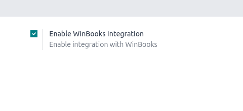
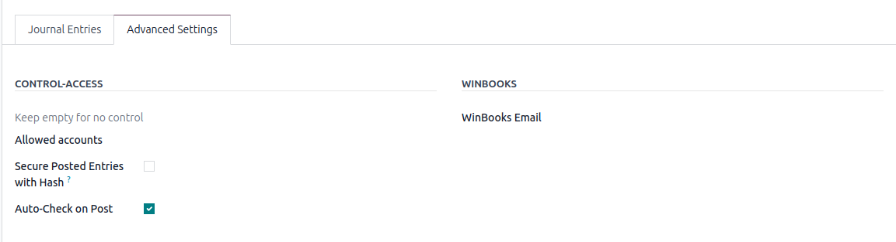
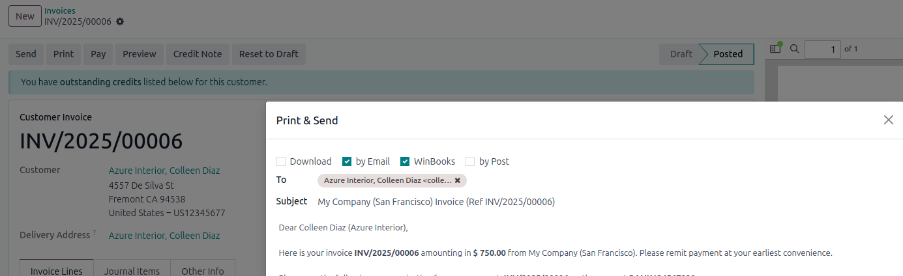
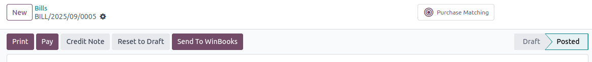
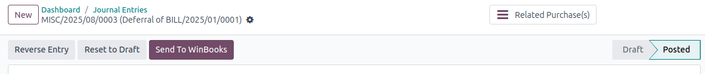

This module adds additional features required for accounting.
The concept of this module is to send emails directly to WinBooks.
WinBooks expects to receive emails containing invoices, bills, and miscellaneous entries.
A button Send Email to WinBooks is available.
It can be configured by going to Configuration > Settings and enabling
Enable WinBooks Integration.

To send the email to a specific address, go to Configuration>journals and fill in the WinBooks email field in the journal.

After configuring the journal and filling in the WinBooks email field, each flow can automatically send the corresponding documents by email:


